Hướng dẫn quản lý nộp phí khu vực cảng Hồ Chí Minh
- Giới thiệu
- Hướng Dẫn Sử Dụng.
Quản lý tờ khai thu phí (khu vực cảng TP Hồ Chí Minh) là một chức năng trên phần mềm ECUS5VNACCS, cho phép Doanh nghiệp đăng ký tài khoản, tạo và thanh toán tờ khai nộp phí cho hàng Cont; hàng Lỏng, Rời hoặc tờ khai cho hàng vào kho CFS.
- Đăng nhập, đăng ký tài khoản.
- Thiết lập thông số khai báo
- Tờ khai nộp phí cho hàng Container.
- Tờ khai nộp phí cho hàng lỏng, rời.
- Tờ khai nộp phí cho hàng vào kho CFS.
- Các trường hợp lưu ý không phải nộp phí
- Danh sách tờ khai nộp phí.
- Danh sách giao dịch.
Doanh nghiệp thực hiện đăng ký tài khoản khai báo tờ khai nộp phí. Sau đó đăng nhập để sử dụng.
Có 2 loại tài khoản: Tài khoản “Doanh nghiệp XNK đại lý thông thường” - Sử dụng mã số thuế, chữ ký số doanh nghiệp sử dụng, tài khoản “Đại lý khai báo cho các doanh nghiệp XNK”- Sử dụng mã số thuế, chữ ký số đại lý.
Bước 1: Vào menu “Nghiệp vụ khác” , Chọn “ Quản lý thu phí (khu vực cảng Hồ Chí Minh”, Chọn “Đăng ký tài khoản”

Với doanh nghiệp chưa có tài khoản, thì nhấn vào nút “Tạo tài khoản mới” để tạo tài khoản trước khi sử dụng

Bước 2: Nhập thông tin Doanh nghiệp muốn đăng ký tài khoản vào tất cả các trường trên form, bạn nhấn nút “Chọn chữ ký số” để lựa chọn thông tin chữ ký số muốn dùng cho tài khoản khai báo tờ khai nộp phí. Thông tin “Người liên hệ”, “Số điện thoại liên hệ”, “Email liên hệ” load tự động từ thông tin liên hệ của doanh nghiệp sử dụng (thông tin Doanh nghiệp tại menu Hệ thống, mục 3).

Lưu ý:
Lựa chọn “Loại doanh nghiệp” là “Đại lý khai báo cho các doanh nghiệp XNK”, nhập danh sách khách hàng tại tab “Danh sách doanh nghiệp”.
Doanh nghiệp là đại lý khai báo cho nhiều doanh nghiệp khách hàng, tích chọn “Xuất biên lai cho DN” nếu muốn xuất biên lai nộp phí cho khách hàng. Bỏ tích nếu muốn xuất biên lai nộp phí cho đại lý.

Bước 3: Click “Đăng ký” để đăng ký tài khoản. Khi đăng ký thành công, hệ thống sẽ trả về thông báo đăng ký thành công.

Nếu thông tin đơn vị đăng ký chưa chính xác, doanh nghiệp có thể sửa đổi thông tin và nhấn nút “Đăng ký” để hệ thống tự động cập nhật thông tin Đơn Vị lên hệ thống.
Tài khoản sau đăng ký được ghi nhận tại web quản lý thông tin thu phí của cảng vụ HCM.
Bước 4: Đăng nhập bằng tài khoản và chữ ký số đã đăng ký thành công ở bước 3 để thực hiện khai báo tờ khai nộp phí.

Lưu ý:
Trường hợp doanh nghiệp đăng ký tài khoản trùng với tài khoản đã có trước đó, việc đăng ký tài khoản chỉ cập nhật thông tin liên quan vào tài khoản đã được đăng ký, chứ không cập nhật lại mật khẩu.
Bước 1: Vào menu “Nghiệp vụ khác” , chọn “Thiết lập thông số khai báo”
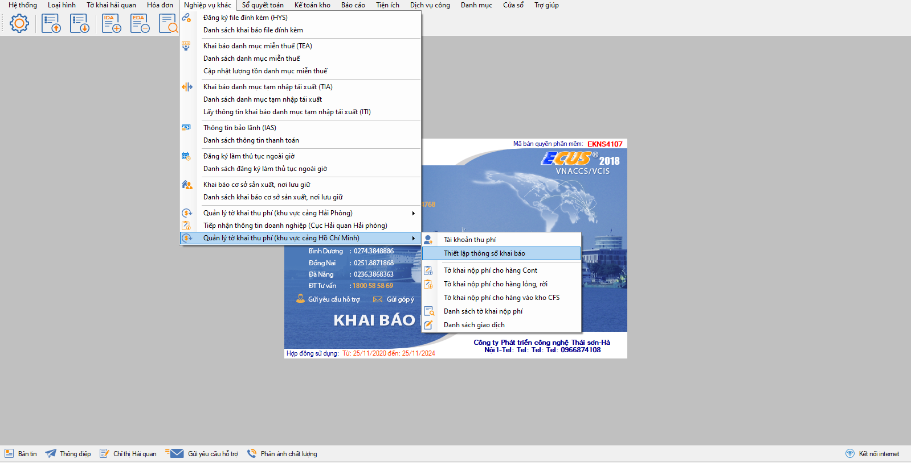
Bước 2: Nhập địa chỉ máy chủ, tên web services
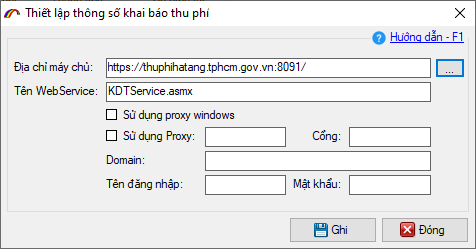
Để thực hiện Tạo tờ khai nộp phí cho hàng cont, doanh nghiệp cần thực hiện các bước sau:
Bước 1: Vào menu “Nghiệp vụ khác”, Chọn “Quản lý thu phí (khu vực cảng Hồ Chí Minh”, chọn “Tờ khai nộp phí cho hàng cont”.
(Thông tin mã đơn vị, tên đơn vị mặc định là mã doanh nghiệp, tên doanh nghiệp được thiết lập ở menu Hệ thống, mục 7. Chọn doanh nghiệp xuất nhập khẩu)
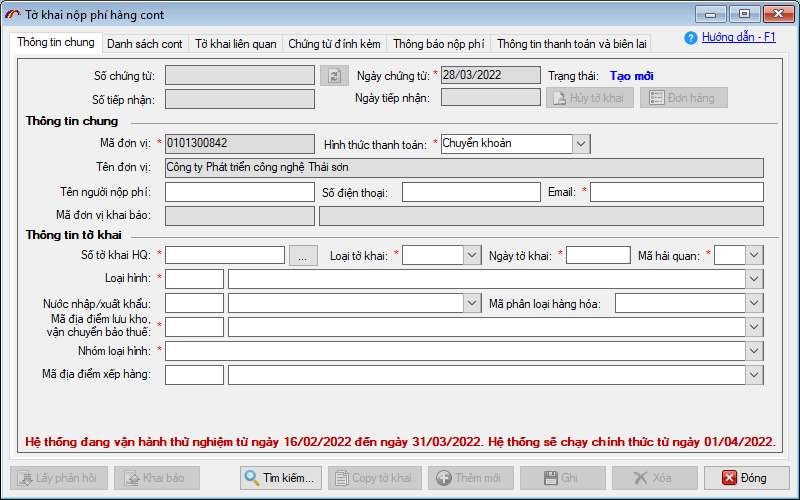
Bước 2: Nhấn vào nút “…” bên phải trường “Số tờ khai HQ” để chọn tờ khai từ Tờ khai hải quan hoặc Tờ khai OLA hoặc Lấy thông tin từ hệ thống Hải quan.
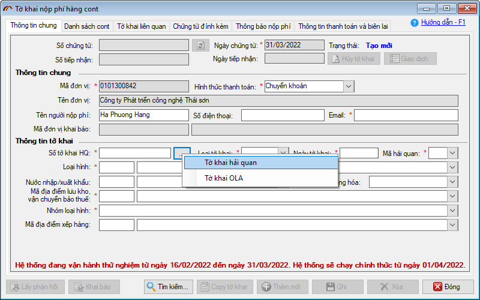
Danh sách tờ khai là những tờ khai đã được khai báo trên Hải Quan, doanh nghiệp có thể tìm kiếm tờ khai muốn khai báo theo các tiêu chí tìm kiếm trên form.
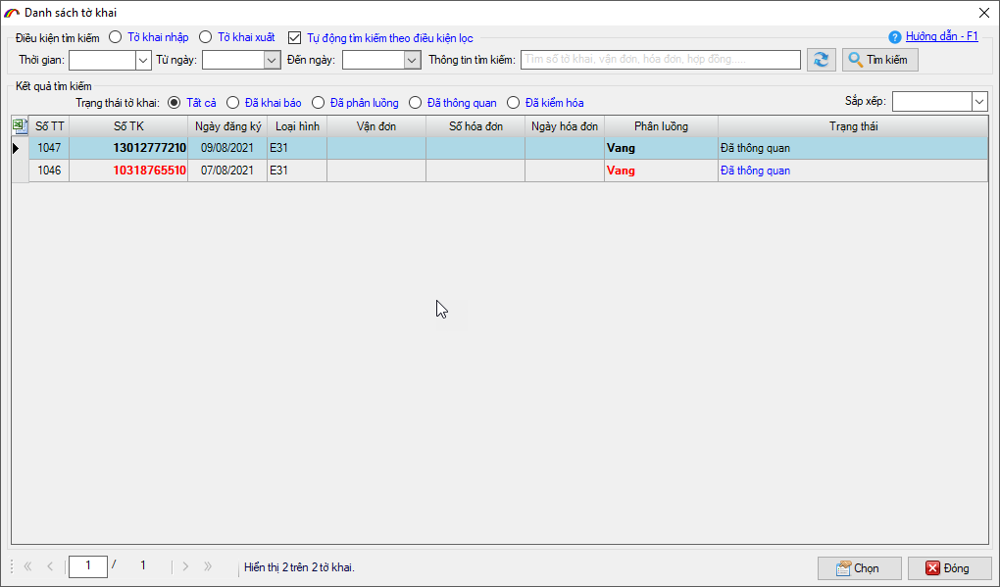
Bước 3: Nhập thông tin khai báo
Tab [Thông tin chung]: thông tin tờ khai được hiển thị tại mục “Thông tin tờ khai” theo thông tin tờ khi đã đăng ký.
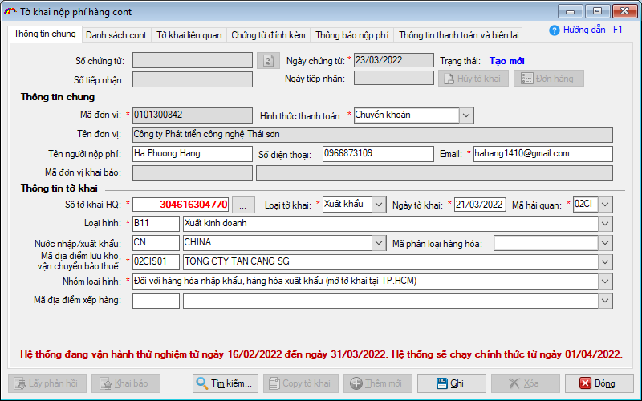
Người dùng tiến hành nhập thông tin “Email“
Tab [Danh sách hàng]: Nếu tờ khai có khai báo danh sách cont thì khi chọn tờ khai thông tin cont và vận đơn sẽ được lấy ra trên tab [Danh sách hàng]. Nếu tờ khai chưa có khai báo danh sách cont thì người dùng có thể nhập thông tin cont bằng cách nhập trực tiếp, hoặc import theo danh sách bằng cách nhấn “F6”, nhấn “F8” để xóa đi 1 dòng cont, hoặc nhấn “F11” để xóa cả danh sách cont.
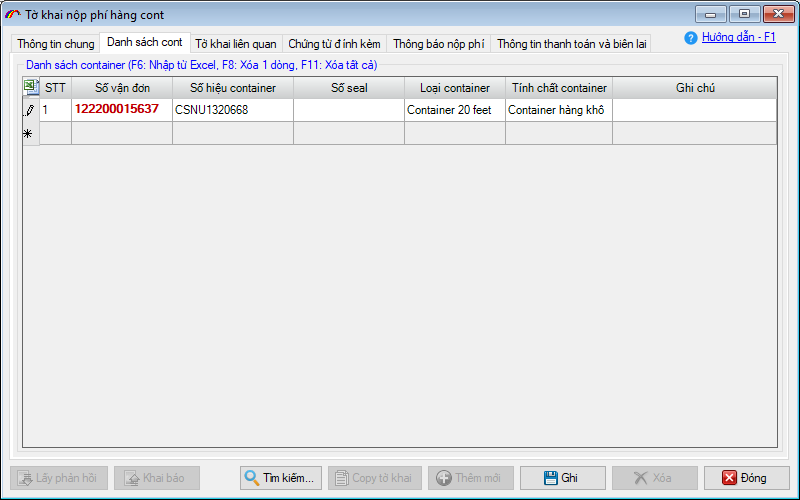
Tab [Tờ khai đính kèm]: trong trường hợp Doanh nghiệp có nhiều tờ khai, Doanh nghiệp có thể chọn nhiều tờ khai trong 1 lần khai báo, bằng cách nhấn nút “Chọn tờ khai”, người dùng tích chọn các tờ khai cần khai báo;
Khi chọn dữ liệu tờ khai đính kèm với hàng cont, chương trình tự động load số cont trên tờ khai đính kèm vào Danh sách cont
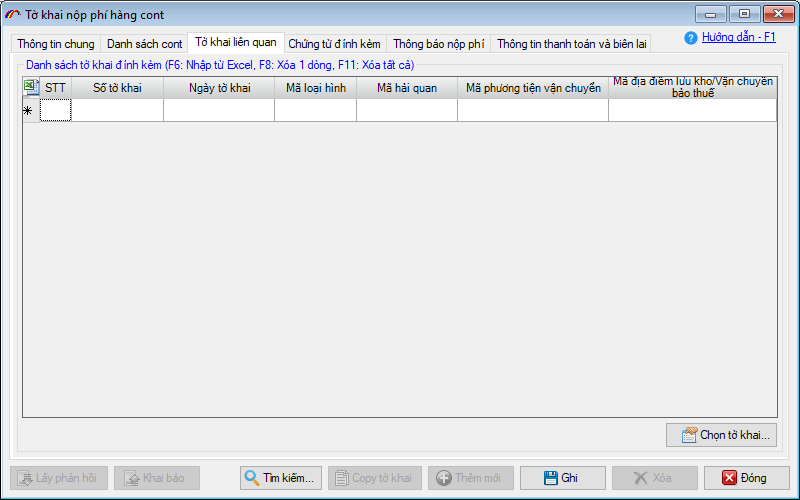
Ngoài ra tab [Chứng từ đính kèm], doanh nghiệp có thể thêm file chứng từ đính kèm.
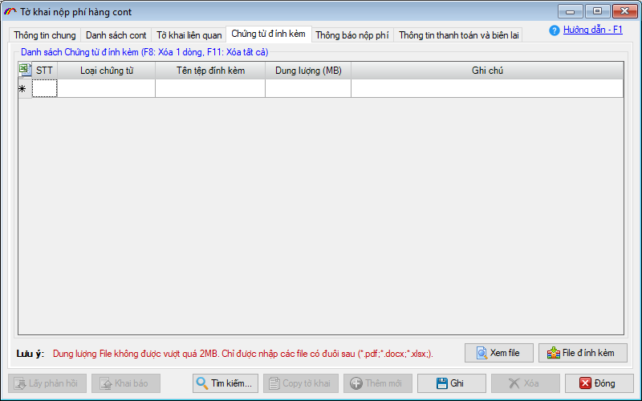
Doanh nghiệp nhấn nút “File đính kèm” để thêm file vào tờ khai báo. Doanh nghiệp có thể chọn loại chứng từ tương ứng với file đính kèm. Khi đính kèm file lên tờ khai, doanh nghiệp có thể xem file đã đính kèm bằng cách nhấn nút “Xem file”
Lưu ý: File đính kèm không được vượt quá 2MB và chỉ được nhập các file có đuôi: *.pdf, *.xlsx, *.docx.
Bước 4:Nhấn nút “Ghi” để tạo mới tờ khai
Bước 5: Nhấn nút “Khai báo” để gửi thông tin tờ khai lên hệ thống Quản lý thu phí, hệ thống sẽ trả lại thông tin số tiếp nhận
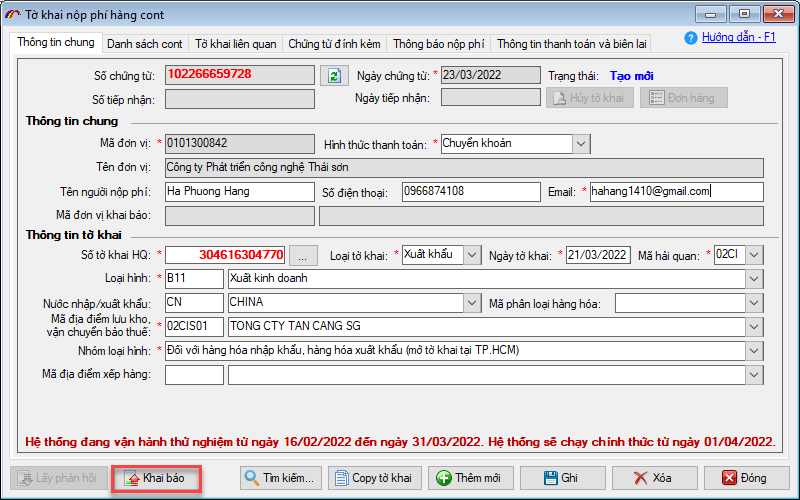
Sau khai báo chương trình tự động nhận kết quả từ hệ thống thu phí trả sẽ trả về tab [Thông báo nộp phí], doanh nghiệp nhấn nút “Xem file” để có thể in Thông báo nộp phí. Trạng thái của tờ khai là Đã có thông báo nộp phí
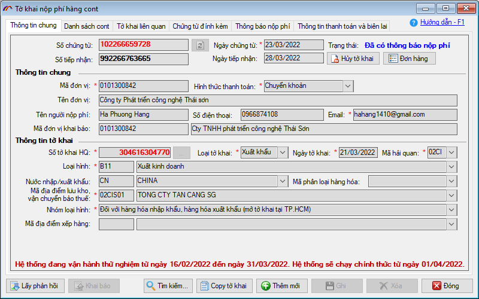
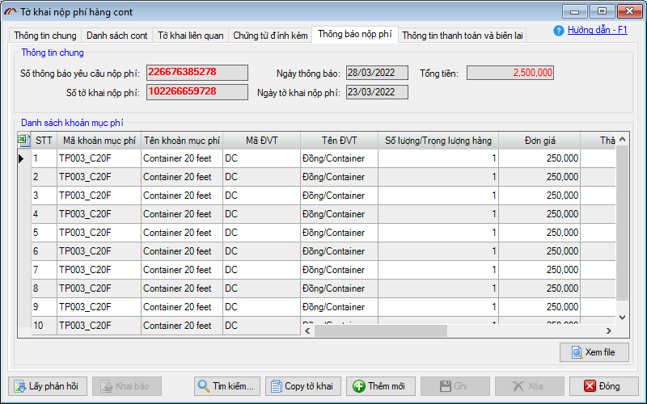
Khi Doanh nghiệp thanh toán thành công với ngân hàng (Hướng dẫn thanh toán ở mục 8. Danh sách giao dịch), đã có biên lai, Doanh nghiệp nhấn nút “Lấy phản hồi”, hệ thống thu phí sẽ trả về thông báo với Số chứng từ ngân hàng, Ngày chứng từ ngân hàng, Số biên lai, Ngày biên lai,... Trạng thái của tờ khai là “Đã thực hiện nộp phí”.
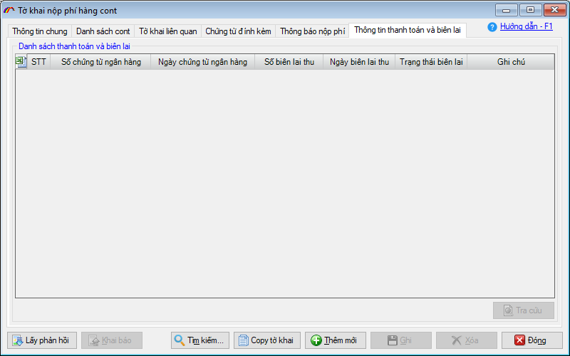
Doanh nghiệp có thể chủ động hủy tờ khai chưa có biên lai hoặc đã có biên lai do khai nhầm, khai thiếu,...Để hủy tờ khai người sử dụng nhấn nút “Hủy tờ khai”, tiến hành nhập các thông tin: “Lý do hủy”, “Số tài khoản hoàn tiền”, “Tên tài khoản hoàn tiền”, “Mã ngân hàng hoàn tiền”,và click “Khai báo”.

Sau khai báo chương trình tự động nhận Kết quả trả về từ hệ thống “Khai báo hủy tờ khai nộp phí thành công” với trường hợp tờ khai chưa có biên lai. Với tờ khai đã có biên lai, cần chờ cán bộ cảng xử lý nghiệp vụ duyệt cho yêu cầu hủy tờ khai thì tờ khai được hoàn tiền, trạng thái tờ khai chuyển thành “Đã hủy”.
Để khai báo nộp phí cho hàng lỏng, rời thì doanh nghiệp vào menu “Nghiệp vụ khác”, chọn “Quản lý thu phí (khu vục cảng Hồ Chí Minh)”, chọn “Tờ khai nộp phí cho hàng lỏng, rời”.
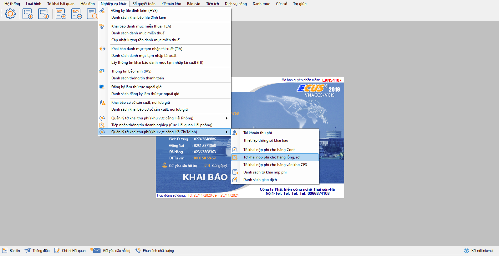
Tương tự, tạo tờ khai nộp phí cho hàng Cont, doanh nghiệp tiến hành chọn thông tin “Số tờ khai HQ” muốn khai báo và tiến hành nhập dữ liệu vào trên form.
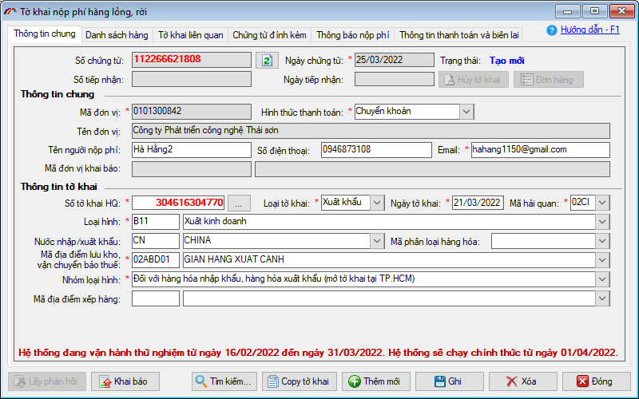
Thông tin tab [Danh sách hàng]: Doanh nghiệp cần phải nhập dữ liệu vào các trường “Số vận đơn”, “Trọng lượng”, “Đơn vị tính”. Khi chọn tờ khai thông tin vận đơn, trọng lượng được hiển thị tại tab [Danh sách hàng]. Người dùng có thể nhập thông tin hàng bằng cách nhập trực tiếp, hoặc import theo danh sách bằng cách nhấn “F6”, nhấn “F8” để xóa đi 1 dòng hàng, hoặc nhấn “F11” để xóa cả danh sách hàng.
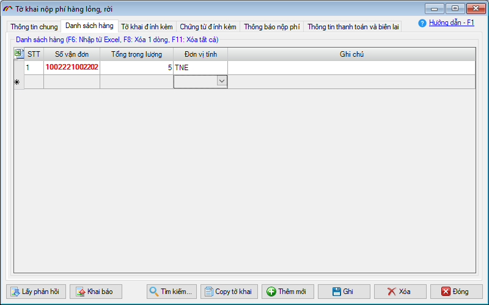
Thông tin [Tờ khai đính kèm], [Chứng từ đính kèm] cách nhập liệu cũng tương tự đối với tờ khai thu phí cho hàng cont.
Tương tự, với hàng cont, Doanh nghiệp sau khi “Ghi’ thành công dữ liệu thì tiến hành khai báo và lấy phản hồi.
Với tờ khai vận chuyển hàng vào kho CFS, kho ngoại quan, doanh nghiệp chọn loại tờ khai “Tờ khai nộp phí cho hàng vào kho CFS”.
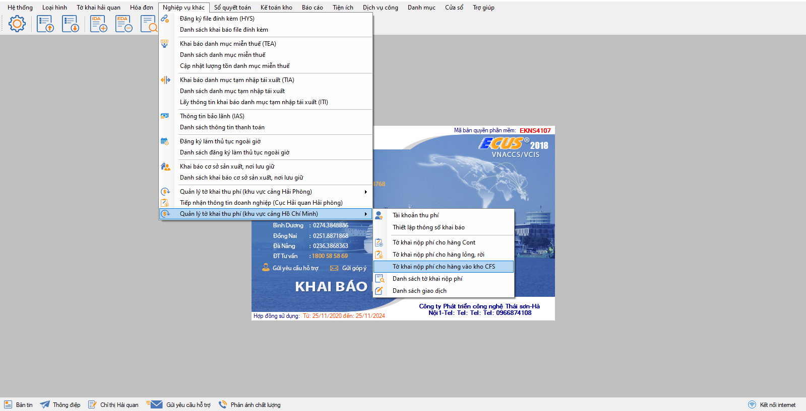
Doanh nghiệp tiến hành chọn thông tin “Số tờ khai OLA” muốn khai báo và nhập dữ liệu vào form”.
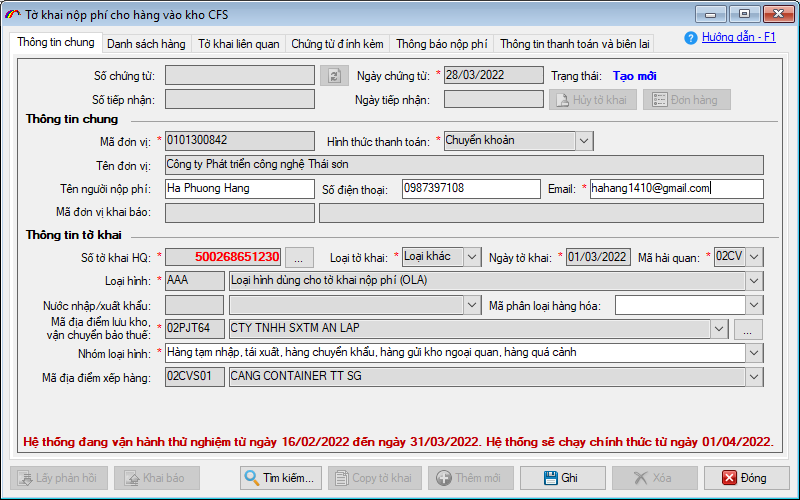
Thông tin tab [Danh sách hàng]: Doanh nghiệp cần nhập dữ liệu vào các trường: Số container, Trọng lượng, Đơn vị tính. Khi chọn tờ khai thông tin Số container được lấy ra trên tab [Danh sách hàng]. Người dùng có thể nhập thông tin hàng bằng cách nhập trực tiếp, hoặc import theo danh sách bằng cách nhấn “F6”, nhấn “F8” để xóa đi 1 dòng hàng, hoặc nhấn “F11” để xóa cả danh sách hàng.
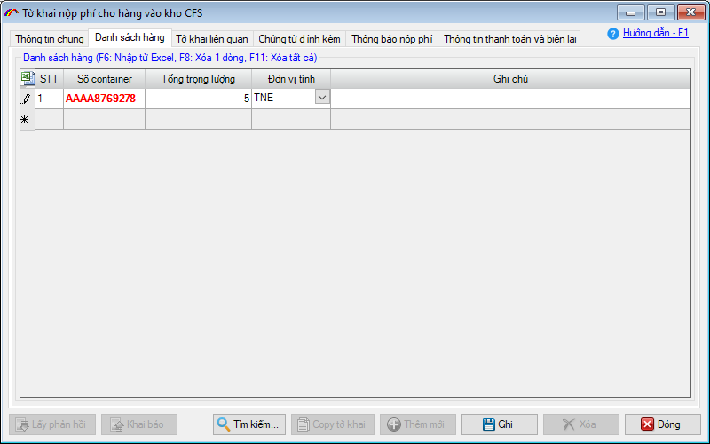
Thông tin [Tờ khai đính kèm], [Chứng từ đính kèm] cách nhập liệu cũng tương tự đối với tờ khai thu phí cho hàng cont.
Tương tự, với hàng cont, Doanh nghiệp sau khi “Ghi’ thành công dữ liệu thì tiến hành khai báo và lấy phản hồi.
Lưu ý:
- “Mã địa điểm lưu kho, vận chuyển bảo thuế” với loại tờ khai CFS lưu thông tin “Mã địa điểm dỡ hàng” của tờ khai vận chuyển OLA
- Biểu cước tính phí cho tờ khai CFS tương tự như tính phí cho tờ khai lỏng, rời
a) Đối với tờ khai nhập khẩu:
• Mã địa điểm chờ thông quan dự kiến không thuộc HCM.
• Mã địa điểm chờ thông quan dự kiến thuộc HCM nhưng là kho CFS hoặc KNQ
b) Đối với tờ khai xuất khẩu:
• Mã địa điểm chờ thông quan dự kiến và địa điểm đích vận chuyển bảo thuế không thuộc HCM.
• Mã địa điểm chờ thông quan dự kiến thuộc HCM nhưng là kho CFS hoặc KNQ
c) Đối với tờ khai vận chuyển độc lập OLA:
• Hàng nhập: có điểm xếp hàng là Cảng thuộc HCM và điểm dỡ hàng là ICD, CẢNG hoặc KNQ của HCM
• Hàng xuất: có điểm xếp hàng là ICD, CẢNG thuộc HCM và điểm dỡ hàng thuộc HCM
Để xem danh sách các tờ khai đã khai báo, doanh nghiệp vào menu “Nghiệp vụ khác”, chọn “Quản lý thu phí (khu vục cảng Hồ Chí Minh)”, chọn “Danh sách tờ khai nộp phí”.
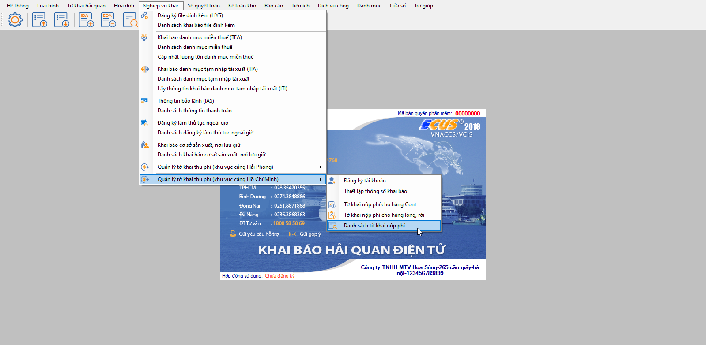
Trong danh sách thì sẽ hiển thị toàn bộ các tờ khai đã tạo, cùng với đó là trạng thái tương ứng với từng tờ khai.
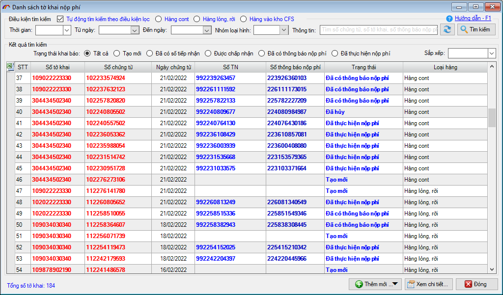
Doanh nghiệp có thể tìm kiếm theo cái tiêu chí trên form, chọn số chứng từ tương ứng, nhấn “Xem chi tiết” hoặc nhấn 2 lần vào chứng từ đó.
Để thực thanh toán tờ khai nộp phí, Doanh nghiệp có thể chọn nhiều thông báo nộp phí để thực hiện thanh toán cùng lúc dựa vào chức năng tại menu Danh sách giao dịch
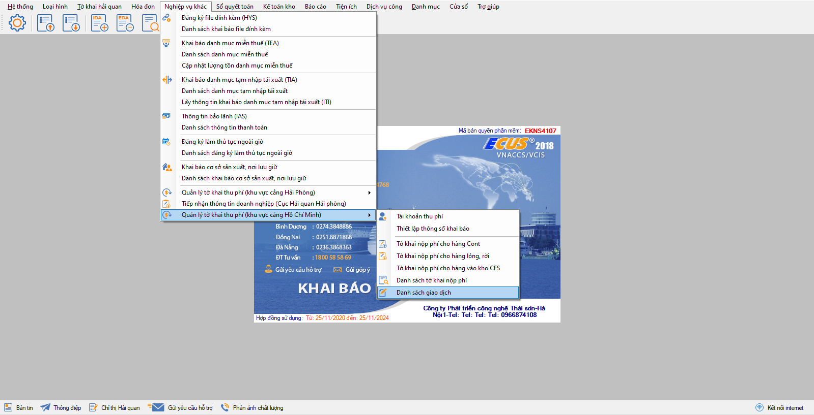
Bước 1: Doanh nghiệp có thể click vào “Giao dịch” tại chi tiết tờ khai nộp phí hoặc truy cập click “Thêm mới” tại “Danh sách giao dịch” để thực hiện tạo giao dịch, thanh toán cho nhiều tờ khai nộp phí.
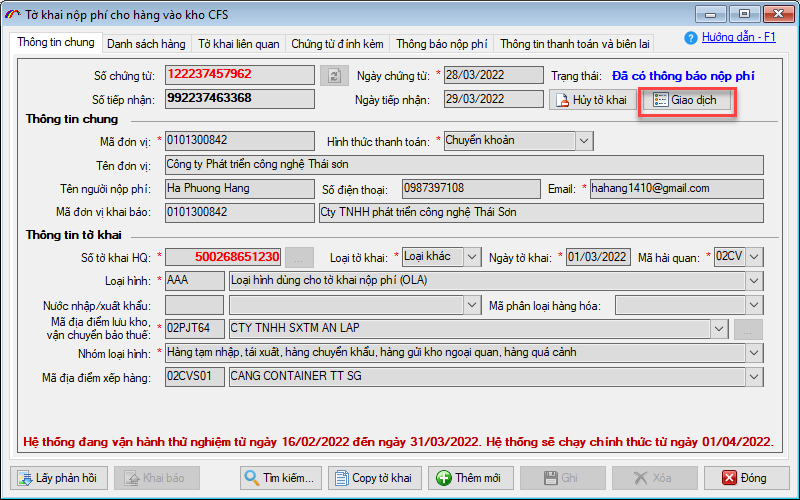
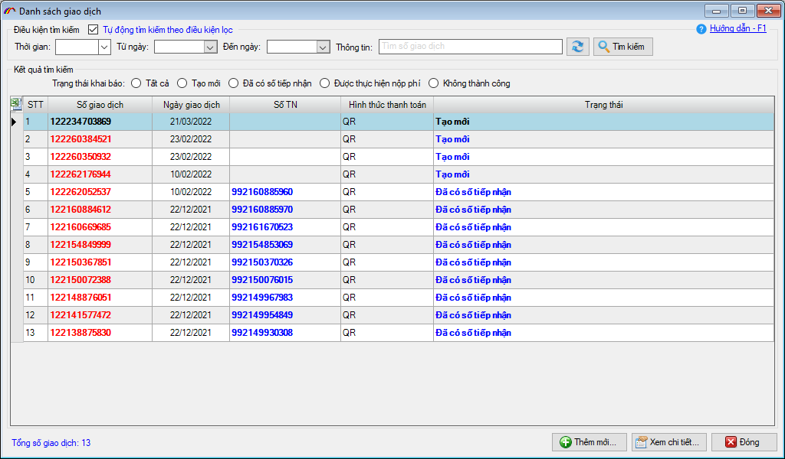
Bước 2: Doanh nghiệp thực hiện chọn các thông báo nộp phí, điền các thông tin bắt buộc và Ghi lại.
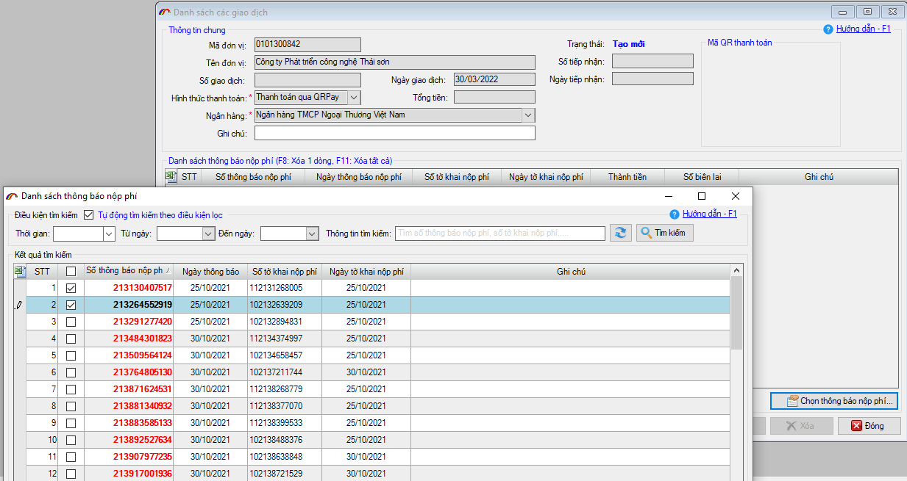
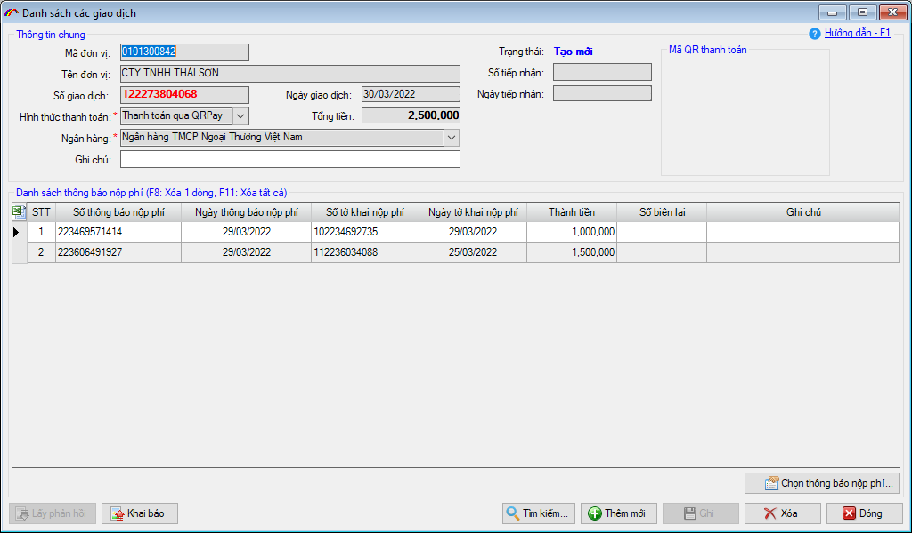
Bước 3: Đơn hàng khai báo thành công sẽ có “Số tiếp nhận”, “Ngày tiếp nhận”, trạng thái đơn hàng chuyền thành "Đã có số tiếp nhận”
Doanh nghiệp “Lấy phản hồi” để lấy QR code, trạng thái đơn hàng chuyển thành “Đã có thông tin thanh toán” khi nhận được QR.

Bước 4: Doanh nghiệp thực hiện thanh toán cho ngân hàng thông qua mã QR trả về, thanh toán thành công, thực hiện “Lấy phản hồi” giao dịch, thông tin số biên lai được cập nhật vào các thông báo nộp phí tương ứng. Trạng thái giao dịch chuyển thành “Đã thanh toán thành công”, trạng thái tờ khai phí chuyển thành “Đã thực hiện nộp phí”
Bản quyền © thuộc về Công ty TNHH Phát triển công nghệ Thái Sơn